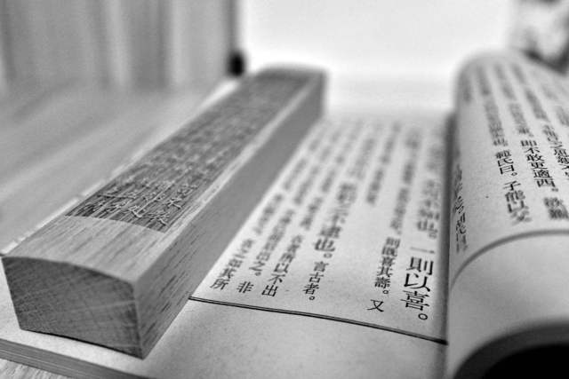

论语中完美人格的赏析

【原文】 子路问成人。子曰：“若臧武仲之知，公绰之不欲，卞庄子之勇，冉求之艺，文之以礼乐，亦可以为成人矣。”曰：“今之成人者何必然？见利思义，见危授命，久要不忘平生之言，亦可以为成人矣。”
【白话文】 子路问怎样才算是一个有完美人格的人。孔子说：“如果具有臧武仲的智慧，孟公绰的不贪欲，卞庄子的勇敢，冉求那样多才多艺，用礼乐加以修饰，也就可以算是一个完美人格的人了。”孔子又说：“现在的完美人格的人何必一定要这样呢？见到利益想到是否符合义的要求，遇到危险不怕牺牲，长久处于穷困还不忘平日的诺言，这样也可以算是一个完美人格的人了。”
【探讨分析】 孔子平时经常在教育自己的学生要有完美的人格，要做一个成人。但是有好些学生对什么是成人的标准不是很理解。这一次是子路去问孔子关于成人的标准是什么。孔子给出了两个答案。第一个答案是孔子对完美人格的人的普遍要求。第二个答案是正对子路来说的。 我们先来分析第一个答案，孔子认为一个完美人格的人必须具备五个要素，即有臧武仲那样的智慧，像孟公绰那样的不贪欲，有卞庄子那样的勇敢，有冉求那样的多才多艺，还有就是懂礼乐。 臧武仲有什么样的智慧？臧武仲是鲁国的大夫，他具有非凡的治国之才，臧武仲因为跟鲁国的孟孙氏有仇，出逃到了齐国，齐国国君大胆任用臧武仲，允准他在绝佳位置选址，盟誓筑台，训练兵马，垦荒屯田，走富国强兵之路，点将台从此巍然屹立于青齐北部，雄踞大齐中心地带。千百年来，黎民百姓世代口口相传，“臧台”一名保留至今。臧武仲受命之后，实行“重农商，奖耕织”的政策，让百姓繁衍生息，“齐纨鲁缟”闻名天下。所以我们可以知道孔子口中完美人格的智慧绝不是小聪明，而是治国安邦的大智慧。